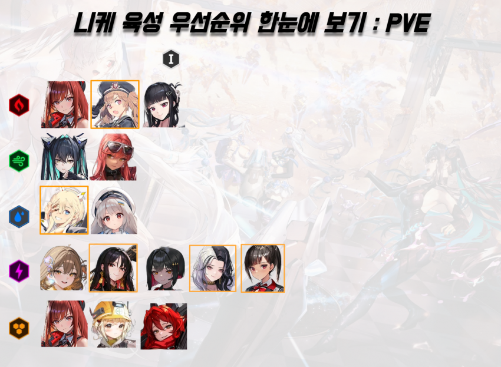
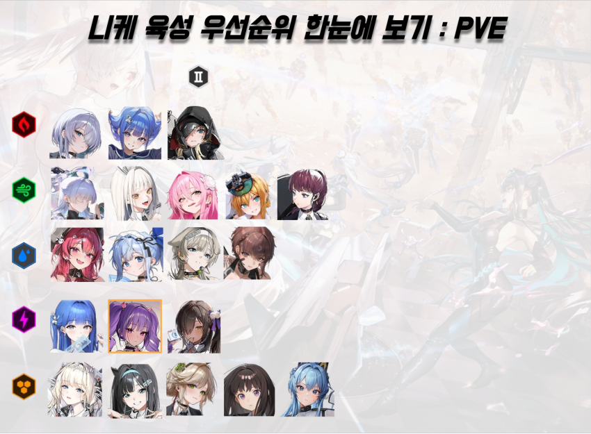
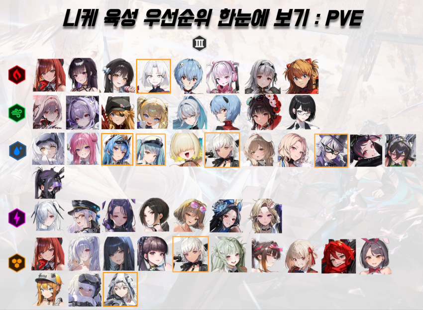
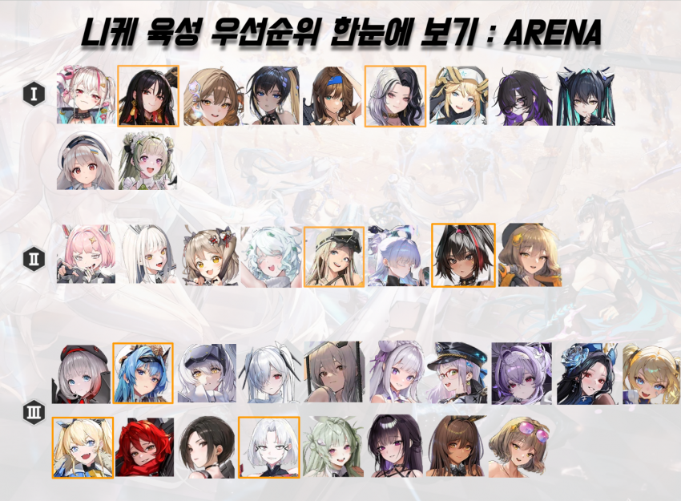

| 절대적인 우선 순위는 아니며 보유한 캐릭터풀, 스킬칩 등에 따라 적당히 타협하시길 권장 드립니다.
| ★ : 캐릭터풀이 충분한 경우 ★ 표시된 니케는 우선순위 낮음 (육성안해도 무관)
| 캐릭터 기준 ◀왼쪽으로 갈 수록 우선 순위 높음
| 도태되거나 사용 빈도가 낮은 니케는 제외
※ 주황색은 애장품
PVE (모험, 기업타워, 솔로레이드 등 모든 PVE 컨텐츠 포함)



ARENA
